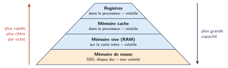
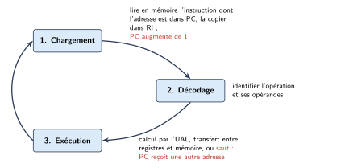

📖 Cours Architecture de von Neumann⚓︎
Programme
| Contenus | Capacités attendues | Commentaires |
|---|---|---|
| Modèle d'architecture séquentielle (von Neumann) | Distinguer les rôles et les caractéristiques des différents constituants d'une machine. Dérouler l'exécution d'une séquence d'instructions simples du type langage machine. | La présentation se limite aux concepts généraux. On distingue les architectures monoprocesseur et les architectures multiprocesseur. Des activités débranchées sont proposées. Les circuits combinatoires réalisent des fonctions booléennes. |
À la fin de ce chapitre, je sais…
- Expliquer ce qu'est un ordinateur « à programme enregistré ».
- Citer les constituants du modèle de von Neumann et décrire le rôle de chacun.
- Comparer les mémoires selon leur vitesse, leur capacité et leur volatilité.
- Relier la largeur du bus d'adresses au nombre de cases mémoire accessibles.
- Décrire le cycle chargement – décodage – exécution et le rôle du compteur de programme.
- Dérouler l'exécution d'une courte séquence d'instructions en langage d'assemblage.
- Distinguer une architecture monoprocesseur d'une architecture multiprocesseur.
0. 🔎 Activité d'amorce : l'ordinateur en papier⚓︎
Cette activité se fait sans ordinateur, par groupes de quatre. Chaque élève joue un constituant de la machine :
- la Mémoire garde la feuille ci-dessous et ne fait que deux choses : donner le contenu d'une case dont on lui annonce le numéro, ou écrire une valeur dans une case ;
- l'Unité de commande tient un papier où est écrit un numéro de case, le compteur, qui vaut 0 au départ ;
- l'Unité de calcul fait les additions et les soustractions qu'on lui demande, et rien d'autre ;
- les Registres tiennent une ardoise à deux cases, R0 et R1, qui valent 0 au départ.
Règle du jeu : on ne se parle que par petits papiers, sur lesquels on écrit soit un numéro de case, soit une valeur. L'Unité de commande répète toujours les mêmes gestes : elle demande à la Mémoire le contenu de la case indiquée par le compteur, ajoute 1 au compteur, puis fait exécuter ce qu'elle a lu.
| Case | Contenu | Case | Contenu |
|---|---|---|---|
| 0 | copier le contenu de la case 10 dans R0 | 10 | 25 |
| 1 | copier le contenu de la case 11 dans R1 | 11 | 17 |
| 2 | additionner R0 et R1, résultat dans R0 | 12 | 0 |
| 3 | copier R0 dans la case 12 | ||
| 4 | arrêter |
À faire
- Jouez le programme jusqu'à l'arrêt. Que contient la case 12 à la fin ?
- Combien de fois la Mémoire a-t-elle été sollicitée ? Quel élève a été le plus occupé ?
- Où se trouve le programme : dans la tête d'un élève, ou ailleurs ?
- Sans changer les rôles, comment faire calculer \(25 - 17\) ? Qu'a-t-il fallu modifier ?
- Si la case 2 contenait le nombre 25, l'Unité de commande pourrait-elle s'en apercevoir avant de la lire ?
Éléments de correction
- La case 12 contient 42.
- La Mémoire est sollicitée 8 fois : 5 lectures d'instructions, 2 lectures de données (cases 10 et 11) et 1 écriture (case 12). C'est elle qui travaille le plus : chaque instruction commence par un aller-retour vers elle.
- Le programme est rangé dans la mémoire, au même endroit que les nombres.
- Il suffit de réécrire le contenu de la case 2 (« soustraire R1 de R0 »). On change le programme sans rien changer à la machine.
- Non : une case contient un code, rien n'indique s'il s'agit d'une instruction ou d'une donnée. C'est le compteur qui décide de ce qui sera lu comme une instruction.
1. 📚 Le modèle de von Neumann⚓︎
1.1 Le programme enregistré⚓︎
Les premiers calculateurs électroniques se programmaient en modifiant leur câblage. Pour faire exécuter un autre calcul à l'ENIAC, achevé fin 1945, il fallait plusieurs jours de rebranchements à la main.
En 1945, le mathématicien John von Neumann décrit, dans un rapport sur le projet d'ordinateur EDVAC, une machine d'un genre nouveau. Le programme n'est plus dans le câblage : il est codé en binaire et rangé dans la mémoire, comme les données. Changer de programme revient alors à changer le contenu de la mémoire, ce que la machine peut faire elle-même.
Définition : programme enregistré
Dans un ordinateur à programme enregistré, les instructions du programme et les données qu'il traite sont stockées dans la même mémoire, sous la même forme : des mots binaires.
Pour aller plus loin : une idée collective
Le rapport de 1945 porte le seul nom de von Neumann, mais l'idée a mûri au sein de l'équipe de l'ENIAC, en particulier chez John Eckert et John Mauchly. Elle prolonge aussi les travaux d'Alan Turing, qui avait montré en 1936 qu'une machine « universelle » peut exécuter n'importe quel programme qu'on lui fournit comme une donnée. Cette notion de programme vu comme une donnée sera reprise en Terminale.
1.2 Les constituants⚓︎
Le modèle de von Neumann organise la machine autour de quatre constituants, reliés par des bus.
![Schéma du modèle de von Neumann. Trois blocs côte à côte : à gauche, le processeur (CPU), qui contient l'unité de commande avec les registres PC et RI, l'unité arithmétique et logique, et une rangée de registres R0, R1… ; au centre, la mémoire, qui contient les programmes (instructions) et les données ; à droite, les entrées-sorties : entrées (clavier, capteurs…) et sorties (écran, actionneurs…). Sous les trois blocs passent trois lignes horizontales : bus d'adresses, bus de données, bus de contrôle. Une flèche à double sens relie chaque bloc à ces bus.](img/modele_von_neumann.svg)
Le schéma montre que la mémoire contient à la fois les programmes et les données, et que tous les échanges passent par les bus : le processeur ne communique jamais directement avec un périphérique sans eux.
| Constituant | Rôle |
|---|---|
| Unité arithmétique et logique (UAL) | effectue les calculs : opérations arithmétiques (addition, soustraction…), opérations logiques (and, or, not), comparaisons |
| Unité de commande | lit les instructions en mémoire, les décode et commande les autres constituants pour les exécuter |
| Registres | petites mémoires très rapides, internes au processeur, qui contiennent les valeurs en cours de traitement |
| Mémoire | contient les instructions et les données, rangées dans des cases numérotées par leur adresse |
| Entrées-sorties | échangent des informations avec l'extérieur : utilisateur, capteurs, actionneurs, réseau, disque |
| Bus | ensembles de fils qui transportent les adresses, les données et les signaux de commande |
L'UAL, l'unité de commande et les registres forment le processeur (en anglais CPU, Central Processing Unit).
À retenir
- Le programme et les données sont dans la même mémoire.
- Processeur (UAL, unité de commande, registres), mémoire et entrées-sorties communiquent par des bus.
2. 🧮 Le processeur⚓︎
2.1 L'unité arithmétique et logique⚓︎
L'UAL est un circuit combinatoire : ses sorties ne dépendent que de ses entrées. Elle est construite avec les portes logiques étudiées au début de ce chapitre. L'additionneur complet du TP S4TP1 (partie C) en est un exemple : en chaînant 64 additionneurs complets, on additionne deux nombres de 64 bits.
Méthode : relier le calcul à la logique
Toute opération de l'UAL est une fonction booléenne : chaque bit du résultat s'exprime avec and, or et not à partir des bits des opérandes. C'est le sens de la phrase du programme « les circuits combinatoires réalisent des fonctions booléennes ».
2.2 L'unité de commande et ses registres⚓︎
L'unité de commande utilise deux registres particuliers :
- le compteur de programme (PC, Program Counter) contient l'adresse de la prochaine instruction à lire en mémoire ;
- le registre d'instruction (RI) contient l'instruction en cours de traitement.
Le processeur est rythmé par une horloge. Sa fréquence se mesure en hertz : un processeur à 3 GHz reçoit 3 milliards de signaux d'horloge par seconde. Une instruction simple demande un ou quelques cycles d'horloge.
À retenir
- L'UAL calcule ; l'unité de commande dirige ; les registres conservent les valeurs en cours.
- Le registre PC contient l'adresse de la prochaine instruction.
- La fréquence d'horloge est une caractéristique du processeur.
3. ⚖️ Les mémoires⚓︎
3.1 Une hiérarchie de mémoires⚓︎
Une mémoire à la fois très rapide, très grande et bon marché n'existe pas. Un ordinateur combine donc plusieurs mémoires.

Plus on monte dans la pyramide, plus la mémoire est rapide, mais plus elle est petite et coûteuse. Le processeur travaille sur les étages du haut et va chercher plus bas ce qui lui manque.
| Mémoire | Temps d'accès (ordre de grandeur) | Capacité (ordre de grandeur) | Volatile ? |
|---|---|---|---|
| Registres | moins d'une nanoseconde | quelques dizaines de valeurs de 64 bits | oui |
| Mémoire cache | quelques nanosecondes | de quelques Mo à quelques dizaines de Mo | oui |
| Mémoire vive (RAM) | une centaine de nanosecondes | de 8 à 64 Go | oui |
| SSD | quelques dizaines de microsecondes | de 256 Go à quelques To | non |
| Disque dur | quelques millisecondes | quelques To | non |
Définition : mémoire volatile
Une mémoire est volatile si elle perd son contenu lorsqu'elle n'est plus alimentée électriquement. Les registres, le cache et la mémoire vive sont volatiles.
La mémoire vive (RAM, Random Access Memory) est accessible en lecture et en écriture. C'est elle qui joue le rôle de la « mémoire » du modèle de von Neumann : le programme en cours d'exécution et ses données y sont chargés. Une mémoire morte (ROM, Read Only Memory) est non volatile et, en principe, accessible seulement en lecture : elle contient par exemple le micrologiciel qui démarre la machine.
À ne pas confondre
Mémoire vive et mémoire de masse sont deux choses différentes. Un téléphone « 8 Go / 256 Go » possède 8 Go de mémoire vive, où s'exécutent les applications, et 256 Go de stockage, où sont conservés les fichiers. Dans le modèle de von Neumann, le disque ou le SSD n'est pas « la mémoire » : c'est un périphérique d'entrée-sortie. Un programme rangé sur le disque doit être copié en mémoire vive avant de pouvoir s'exécuter.
À faire
- Classez de la plus rapide à la plus lente : disque dur, registre, mémoire vive, mémoire cache.
- On éteint un ordinateur pendant la rédaction d'un texte non enregistré. Expliquez pourquoi le texte est perdu, en employant le mot « volatile ».
Éléments de correction
- Registre, mémoire cache, mémoire vive, disque dur.
- Le texte en cours de rédaction se trouve en mémoire vive. Cette mémoire est volatile : elle perd son contenu quand elle n'est plus alimentée. Seul un enregistrement l'aurait copié sur la mémoire de masse, qui est non volatile.
4. 🔌 Les entrées-sorties et les bus⚓︎
Les périphériques d'entrée (clavier, souris, capteurs, micro) transmettent des informations à l'ordinateur ; les périphériques de sortie (écran, imprimante, actionneurs) en reçoivent. Les périphériques de stockage et la carte réseau font les deux.
Autour du processeur, on distingue trois bus :
- le bus d'adresses transporte l'adresse de la case mémoire ou du périphérique concerné ; il va du processeur vers les autres constituants ;
- le bus de données transporte les valeurs lues ou écrites, dans les deux sens ;
- le bus de contrôle transporte les signaux de commande (lecture ou écriture, horloge…).
Exemple : largeur du bus d'adresses
Un bus d'adresses de \(n\) fils transporte une adresse de \(n\) bits. Avec \(n\) bits, on écrit \(2^n\) nombres différents (chapitre III) : le processeur peut donc désigner \(2^n\) cases mémoire.
Avec un bus d'adresses de 16 bits, le processeur désigne \(2^{16} = 65\,536\) cases. Si chaque case contient un octet, il accède à 65 536 octets, soit 64 Kio (1 Kio vaut \(2^{10} = 1\,024\) octets).
À faire
- Un processeur possède un bus d'adresses de 32 bits et chaque adresse désigne un octet. Combien d'octets peut-il adresser ? Exprimez le résultat en Gio, sachant que \(1 \text{ Gio} = 2^{30}\) octets.
Éléments de correction
- Il adresse \(2^{32}\) octets. Comme \(2^{32} = 2^{2} \times 2^{30}\), cela fait 4 Gio (un peu plus de 4 milliards d'octets). C'est pourquoi les anciens systèmes 32 bits ne pouvaient pas utiliser plus de 4 Gio de mémoire vive.
Hors programme : les contrôleurs et l'accès direct à la mémoire
Le processeur ne pilote pas lui-même chaque octet lu sur un disque. Il confie la lecture à un contrôleur de périphérique, qui écrit directement les octets en mémoire vive (accès direct à la mémoire, ou DMA) et prévient le processeur à la fin par une interruption. Pendant ce temps, le processeur exécute d'autres instructions.
5. 🔁 Exécuter un programme⚓︎
5.1 Langage machine et langage d'assemblage⚓︎
Une instruction en mémoire est un mot binaire, par exemple sur 32 bits. Une partie du mot indique l'opération à effectuer (le code opération), le reste indique ses opérandes : registres, valeur, adresse. L'ensemble des instructions que reconnaît un processeur forme son jeu d'instructions ; c'est le langage machine de ce processeur.
Lire ou écrire des mots binaires est très difficile pour un humain. On utilise donc un langage d'assemblage, où chaque instruction est écrite avec un nom court, appelé mnémonique. Un programme appelé assembleur traduit ensuite chaque ligne en un mot binaire.
| Langage d'assemblage | Langage machine (32 bits) |
|---|---|
MOV R0,#42 |
11100011 10100000 00000000 00101010 |
On reconnaît dans le dernier octet la valeur \(00101010_2 = 42_{10}\).
Dans ce cours et dans le TP S4TP2, on utilise le jeu d'instructions simplifié du simulateur AQA, proche de celui des processeurs ARM des téléphones. Voici les instructions du cours :
| Instruction | Effet |
|---|---|
MOV R0,#42 |
place la valeur 42 dans le registre R0 |
MOV R1,R0 |
copie le contenu du registre R0 dans le registre R1 |
LDR R0,10 |
copie dans R0 le contenu de la case mémoire d'adresse 10 (load, charger) |
STR R0,12 |
copie le contenu de R0 dans la case mémoire d'adresse 12 (store, ranger) |
ADD R2,R0,R1 |
place dans R2 la somme R0 + R1 |
ADD R2,R0,#5 |
place dans R2 la somme R0 + 5 |
SUB R2,R0,R1 |
place dans R2 la différence R0 − R1 |
HALT |
arrête le programme |
Attention : valeur ou adresse
Le signe # change tout. MOV R0,#12 place la valeur 12 dans R0. LDR R0,12 place dans R0 le contenu de la case d'adresse 12, qui peut valoir n'importe quoi.
5.2 Le cycle d'exécution⚓︎
Le processeur exécute les instructions l'une après l'autre, d'où le nom d'architecture séquentielle. Pour chaque instruction, l'unité de commande répète le même cycle.

- Chargement : l'unité de commande envoie le contenu de PC sur le bus d'adresses, reçoit l'instruction par le bus de données et la place dans RI ; PC augmente de 1.
- Décodage : l'unité de commande identifie l'opération et ses opérandes.
- Exécution : l'UAL calcule, ou une valeur passe entre un registre et la mémoire.
Comme PC augmente de 1 à chaque chargement, les instructions s'exécutent dans l'ordre des adresses. Seule une instruction de saut (étudiée dans le TP S4TP2) modifie PC pour reprendre ailleurs : c'est ainsi que sont réalisés les tests et les boucles.
5.3 Dérouler un programme⚓︎
Dérouler un programme, c'est noter, instruction après instruction, l'état des registres et des cases mémoire qui changent.
Exemple : le programme de l'amorce
Le programme de l'ordinateur en papier s'écrit ainsi en langage d'assemblage. On suppose que les cases 10 et 11 contiennent 25 et 17.
1 2 3 4 5 | |
| PC avant | Instruction exécutée | R0 | R1 | case 12 | PC après |
|---|---|---|---|---|---|
| 0 | LDR R0,10 |
25 | 0 | 0 | 1 |
| 1 | LDR R1,11 |
25 | 17 | 0 | 2 |
| 2 | ADD R0,R0,R1 |
42 | 17 | 0 | 3 |
| 3 | STR R0,12 |
42 | 17 | 42 | 4 |
| 4 | HALT |
42 | 17 | 42 | arrêt |
On remarque que ADD R0,R0,R1 remplace l'ancienne valeur de R0 par le résultat.
À faire
-
Déroulez le programme suivant dans un tableau du même modèle. Que contient la case 30 à la fin ?
1 2 3 4 5 6
MOV R0,#9 MOV R1,#4 SUB R2,R0,R1 ADD R1,R2,R2 STR R1,30 HALT
Éléments de correction
- Après les deux
MOV, R0 = 9 et R1 = 4.SUBdonne R2 = 5.ADD R1,R2,R2donne R1 = 10 (l'ancienne valeur 4 est écrasée).STRécrit 10 dans la case 30. À la fin : R0 = 9, R1 = 10, R2 = 5, case 30 = 10.
À retenir
- Une instruction est un mot binaire : un code opération et des opérandes.
- Le langage d'assemblage est une écriture lisible du langage machine ; l'assembleur le traduit.
- Cycle : chargement (PC augmente de 1), décodage, exécution.
- Dérouler un programme, c'est suivre l'évolution de PC, des registres et de la mémoire.
6. ⚙️ Et aujourd'hui ?⚓︎
Plus de 80 ans après, les ordinateurs, les téléphones et les consoles suivent toujours le modèle de von Neumann. Deux évolutions sont à connaître.
La mémoire cache. Le processeur va beaucoup plus vite que la mémoire vive : sans précaution, il passerait l'essentiel de son temps à attendre les échanges sur le bus. On place donc entre eux une mémoire cache, qui garde une copie des instructions et des données utilisées récemment.
Du monoprocesseur au multiprocesseur. Une architecture monoprocesseur ne comporte qu'une unité de traitement : une seule suite d'instructions s'exécute à un instant donné. Pendant des décennies, on a gagné en vitesse en augmentant la fréquence d'horloge. Vers 2005, cette course s'est arrêtée : au-delà de quelques GHz, le processeur chauffe trop. Les constructeurs ont alors multiplié les unités de traitement. Une architecture multiprocesseur en comporte plusieurs, qui exécutent chacune leur propre suite d'instructions en même temps. Dans un processeur multicœur, ces unités, appelées cœurs, sont gravées sur une même puce.
Attention : plus de cœurs ne veut pas dire plus rapide
Un programme écrit comme une seule suite d'instructions n'utilise qu'un cœur à la fois. Huit cœurs n'accélèrent un calcul que si le travail peut être découpé en tâches indépendantes, et si le programme est écrit pour cela.
Pour aller plus loin : l'architecture de Harvard
Dans l'architecture de Harvard, les instructions et les données sont rangées dans deux mémoires séparées, reliées au processeur par des bus distincts. Le processeur peut ainsi lire une instruction et une donnée en même temps, ce qui évite d'attendre le bus unique du modèle de von Neumann. On la trouve dans beaucoup de microcontrôleurs, comme celui des cartes Arduino. Les processeurs actuels mêlent les deux modèles : une seule mémoire vive, mais deux caches séparés, l'un pour les instructions, l'autre pour les données.
7. 🧠 Synthèse⚓︎
À retenir
- Modèle de von Neumann : processeur (UAL, unité de commande, registres), mémoire, entrées-sorties, reliés par des bus ; le programme est enregistré dans la même mémoire que les données.
- Les mémoires forment une hiérarchie : registres, cache, mémoire vive, mémoire de masse. Plus une mémoire est rapide, plus elle est petite et coûteuse. Les trois premières sont volatiles.
- Un bus d'adresses de \(n\) bits permet de désigner \(2^n\) cases mémoire.
- Le processeur répète le cycle chargement – décodage – exécution ; PC contient l'adresse de la prochaine instruction, un saut le modifie.
- Un processeur multicœur exécute plusieurs suites d'instructions en même temps ; un programme n'en profite que s'il est découpé en tâches indépendantes.